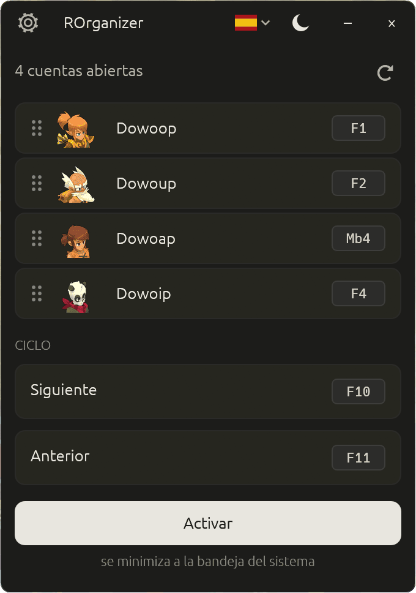

Cambia entre tus cuentas de Dofus con una sola tecla.
Organizer multicuenta gratuito y open source, para Dofus Unity y Dofus Retro.
¿Juegas con hasta ocho cuentas a la vez? Asigna una tecla a cada una y pasa de una a otra al instante. Sin interactuar con el juego, sin conexión a internet, sin saturación.
Gratuito · Windows 10 y 11 · un solo archivo, sin instalador
Una tecla, una cuenta:

Por qué esta
Una herramienta que escucha tu teclado debería poder leerse.
Inspirado en nAiO Organizer, una herramienta que la comunidad Dofus conoce bien — pero totalmente open source. Para un programa que escucha tus atajos y observa tus ventanas, eso lo cambia todo.
- El código es público
- Cualquiera puede leerlo y verificar que no hay keylogger, ni telemetría, ni conexión de red oculta.
- El archivo que descargas es verificable
- Cada versión la compila GitHub desde el código público, nunca en una máquina personal, con una atestación de procedencia que puedes comprobar con un solo comando. Nadie más puede generar una.
- No muere conmigo
- Si dejo el proyecto, cualquiera puede retomarlo. Tu herramienta no depende de una sola persona.
No lee el juego, no lo modifica, no le envía nada. ROrganizer solo escucha tus atajos y trae la ventana correcta al frente — exactamente lo mismo que hace Alt+Tab en Windows.
Privacidad
Sin conexión, y se puede comprobar.
- La app nunca se conecta a ningún servidor.
- No toca Dofus. No lo lee, no lo modifica, no le envía nada. Solo escucha tus atajos y trae la ventana correcta al frente.
- No se registra ninguna pulsación de tecla. Los atajos se identifican al vuelo y se olvidan al instante.
- El único archivo que escribe en tu disco es su propia configuración: tus atajos, tu idioma, tu tema.
Qué hace
Seis cosas, bien hechas.
- Detección automáticaTus cuentas aparecen al iniciarse, tanto en Dofus como en Dofus Retro y Dofus Experimental.
- Un atajo por cuentaUna tecla del teclado o un botón del ratón. F3 Mb4
- Ciclo entre cuentasUn atajo siguiente, uno anterior, y recorres todo tu equipo.
- Arrastrar y soltarOrdena tus cuentas como más te convenga.
- Tema claro u oscuroEn francés, inglés o español.
- Discreto en la bandeja del sistemaActívalo o desactívalo con un clic, sin cerrar la aplicación.
Consumo real
Lo bastante ligero para olvidarte de él.
Medido en reposo, con la aplicación activa, mientras juegas.
- ~8
- MBel ejecutable
- ~75
- MBde RAM en uso
- 0 %
- de CPUmientras juegas
- <¼s
- detecciónde una cuenta nueva
Empezar
Tres pasos, sin instalación.
- Descarga
Coge el archivo desde la página de versiones. Sin instalador, sin dependencias.
- Lanza
Doble clic. ROrganizer detecta por sí solo las cuentas que ya tienes abiertas.
- Configura
Haz clic en «definir» junto a una cuenta y pulsa la tecla que quieras asignarle.
Verificar
Dos comandos para estar seguro de lo que ejecutas.
GitHub muestra la huella de cada archivo publicado junto a su nombre. Compárala con la tuya:
> Get-FileHash .\ROrganizer-<versión>-x86_64-windows.exe -Algorithm SHA256
Y a partir de la versión 1.3.0, cada archivo lleva una atestación de procedencia firmada por GitHub, que lo vincula al código público y a la etiqueta publicada:
> gh attestation verify .\ROrganizer-<versión>-x86_64-windows.exe --repo Loulouw/ROrganizer
El procedimiento completo está detallado en la política de seguridad del proyecto (en inglés y francés).
Preguntas
Lo que más me preguntan.
¿Tengo que configurar cada cuenta una por una?
No. ROrganizer detecta automáticamente todas tus cuentas en cuanto se inician, tanto en el cliente clásico como en Dofus Retro y Dofus Experimental. Solo tienes que asignar un atajo a cada una, y queda guardado. Las cuentas de Retro se muestran sin icono de clase: su ventana no lo indica.
¿Puedo ser baneado por usarlo?
ROrganizer no interactúa con Dofus. No lo lee, no lo modifica, no le envía ningún comando. Solo trae una ventana al frente — exactamente lo mismo que hace Alt+Tab en Windows. Dicho esto, el uso de herramientas de terceros es bajo tu propia responsabilidad respecto a las condiciones de uso de Ankama.
¿Funcionan los atajos mientras estoy en el juego?
Sí. Se escuchan a nivel global de Windows, así que funcionan independientemente de la ventana en primer plano. Una salvedad: si Dofus se ejecuta como administrador, lanza ROrganizer también como administrador.
Windows muestra una advertencia azul al primer arranque, ¿es normal?
Sí. ROrganizer no está firmado con un certificado de firma de código, que cuesta varios cientos de euros al año y no es justificable para un proyecto gratuito. Windows SmartScreen alerta por precaución sobre cualquier programa poco conocido. Haz clic en «Más información» y luego en «Ejecutar de todos modos».
Mi antivirus detecta un «troyano», ¿la app es peligrosa?
No, es un falso positivo. Para activar tus atajos incluso cuando Dofus está en primer plano, ROrganizer necesita escuchar el teclado y el ratón a nivel global de Windows y luego traer una ventana al frente. Un antivirus que juzga un programa por su forma, sin leer su código, no puede distinguir ese mecanismo del de un programa espía. El nombre que muestra — a menudo Wacatac — es una etiqueta genérica asignada automáticamente, no la identificación de un virus conocido.
Lo que puedes comprobar tú mismo: el código fuente es público, no se registra ninguna pulsación de teclado y la app no se conecta a ningún servidor — verificable en el Monitor de recursos de Windows. Cada falso positivo se notifica a Microsoft al publicar una versión, pero la corrección tarda unos días en propagarse. Mientras tanto, puedes añadir el archivo como exclusión en tu antivirus, después de comprobar su huella.
¿Cómo desinstalo la aplicación?
Borra el archivo. Tus preferencias se guardan en %APPDATA%\rorganizer\ — puedes borrar esa carpeta para una limpieza completa. Sin cambios en el registro de Windows, sin servicio instalado.
Cuidado con las falsificaciones
ROrganizer se descarga únicamente desde la página de versiones del repositorio de GitHub, como un solo archivo ejecutable.
Este sitio no aloja ningún archivo. El botón de descarga te lleva a GitHub — es lo normal, y es el único comportamiento legítimo.
Nunca se distribuye:
- dentro de un archivo comprimido
.zip,.raro.7z— y menos aún protegido por contraseña; - como script
.bat,.cmd,.ps1o.vbs; - mediante un instalador o un
setup.exe; - desde un alojamiento de archivos, un enlace de Discord, un foro o un sitio espejo.
Una contraseña de archivo comunicada por separado — en un vídeo, un comentario, un mensaje privado — sirve para impedir el análisis antivirus automático del alojamiento. Eso ya es una señal de alarma.
Cualquier archivo que lleve el nombre ROrganizer y no corresponda a esta descripción no proviene de mí, sea cual sea la fuente que lo ofrezca.